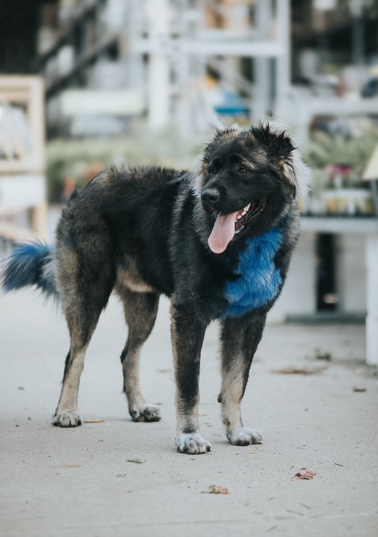

Caucasian Shepherd Dog

From Wikipedia: Caucasian Shepherd Dog.
The Caucasian Shepherd Dog, also known as the Caucasian Ovcharka is a breed of large livestock guardian dog native to the countries of the Caucasus region, notably Georgia, Armenia, Azerbaijan, and Dagestan.[1] Selective breeding of caucasian shepherds started in the Soviet Union from about 1920 from dogs of the Caucasus Mountains and the steppe regions of Southern Russia.[2] The Caucasus Mountains in Georgia has historically been the principal region of distribution of the Caucasian Shepherd dogs, both in terms of numbers and the quality of the dogs present in the area.[1]
History

For centuries dogs similar to the Caucasian mountain dogs have served shepherds in the Caucasus mountains as livestock guardian dogs, defending sheep from predators, mainly wolves, jackals and bears. Caucasian Shepherd Dogs served as guard dogs, bear hunting dogs and today they work as prison guard dogs in Russia.[3]
During the twentieth century Soviet breeders selected some of these varieties among Caucasian dogs and created the Caucasian Shepherd Dog breed. Caucasian shepherds were first described by the famous Russian cynologist Aleksandr Mazover, noting that the center of distribution of the breed, both in terms of numbers and quality, were Georgia, Azerbaijan, Armenia and Dagestan.[1] While the dogs from different areas of the region shared the general features today present in Caucasian shepherds, Caucasian Shepherds from Georgia were considered to be the best examples of the breed due to their size, powerful musculoskeletal structure, and attractive long hair. For this reason, Georgian SSR became a principal region of cultivation of Caucasian Shepherd Dogs in the Soviet Union.[1]
The breed was definitively accepted by the Fédération Cynologique Internationale in 1984, under the patronage of the Soviet Union.[4]
Characteristics
The Caucasian Ovcharka is a large dog. The preferred height at the withers is in the range 67–70 cm for females, and 72–75 cm for males. The minimum heights and weights for registration are 64 cm and 40 kg for females, and 68 cm and 50 kg for males.[2]